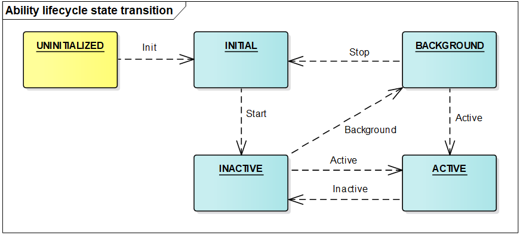
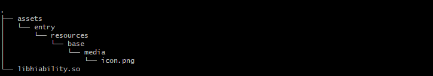

Application Framework¶
Overview¶
The application framework of OpenHarmony consists of two modules: ability management framework and bundle management framework.
1. Ability management framework: This framework is provided by OpenHarmony for you to develop OpenHarmony applications. The following figure shows the modules in the ability management framework.

AbilityKit is a development kit provided by the ability management framework. You can use this kit to develop applications based on the Ability component. There are two types of applications developed based on the Ability component: JS Ability developed using the JavaScript language and Native Ability developed using the C/C++ language. The JS application development framework encapsulates JavaScript UI components on the basis of the AbilityKit and is used to help you quickly develop JS Ability-based applications.
Ability is the minimum unit for the system to schedule applications. It is a component that can implement an independent functionality. An application can contain one or more Ability instances. There are two types of templates that you can use to create an Ability instance: Page and Service.
An Ability using the Page template (Page ability for short) provides a UI for interacting with users.
An Ability using the Service template does not have a UI and is used for running background tasks.
An AbilitySlice represents a single screen and its control logic. It is specific to Page abilities. A Page ability may contain one ability slice or multiple ability slices that provide highly relevant capabilities. The following figure shows the relationship between a Page ability and its ability slices.
Figure 2 Relationship between a Page ability and its ability slices
Lifecycle is a general term for all states of an ability, including UNINITIALIZED, INITIAL, INACTIVE, ACTIVE, and BACKGROUND. The following figure shows the lifecycle state transition of an ability.
Figure 3 Lifecycle state transition of a Page abilityDescription of ability lifecycle states:
UNINITIALIZED: The ability is not initialized. This state is a temporary state. An ability changes directly to the INITIAL state upon its creation.
INITIAL: This state refers to the initial or stopped state. The ability in this state is not running. The ability enters the INACTIVE state after it is started.
INACTIVE: The ability is visible but does not gain focus. This state is the same as the ACTIVE state because the concept of window focus is not supported currently.
ACTIVE: The ability is in the foreground and has focus. The ability changes from the ACTIVE state to the INACTIVE state before returning to the background.
BACKGROUND: The ability returns to the background. After being re-activated, the ability enters the ACTIVE state. After being destroyed, the ability enters the INITIAL state.
AbilityLoader is used to register and load Ability classes. After creating an Ability class, you should first call the registration API defined in AbilityLoader to register the Ability class name with the ability management framework so that this Ability can be instantiated when being started.
AbilityManager enables inter-process communication (IPC) between the AbilityKit and Ability Manager Service.
EventHandler is provided by the AbilityKit to enable inter-thread communication between abilities.
The Ability Manager Service is a system service used to coordinate the running relationships and lifecycle states of Ability instances. It consists of the following modules:
The service startup module starts and registers the Ability Manager Service.
The service interface management module manages external capabilities provided by the Ability Manager Service.
The process management module starts and destroys processes where Ability instances are running, and maintains the process information.
The ability stack management module maintains the presentation sequence of abilities in the stack.
The lifecycle scheduling module changes an ability to a particular state based on the current operation of the system.
The connection management module manages connections to Service abilities.
The AppSpawn is a system service used to create the process for running an ability. This service has high permissions. It sets permissions for Ability instances and pre-loads some common modules to accelerate application startup.
2. Bundle management framework: This framework is provided by OpenHarmony for you to manage application bundles. The following figure shows the modules in the bundle management framework.

BundleKit: includes external APIs provided by the Bundle Manager Service, including the APIs for application installation and uninstallation, bundle information query, and bundle state change listeners.
Bundle scanning module: parses pre-installed or installed bundles on the local device and extracts information from them for the bundle management module to manage and make the information persistent for storage.
Bundle installation module: installs, uninstalls, and updates a bundle. The Bundle installation service is an independent process used to create or delete installation directories and has high permissions.
Bundle management module: manages information related to application bundles and stores persistent bundle information.
Bundle security management module: verifies signatures, and grants and manages permissions.
Directory Structure¶
The following table describes the source code directory structure of the application framework.
Table 1 Source code directory structure of the application framework
Directory | Description |
|---|---|
foundation/aafwk/frameworks/ability_lite | Core code for AbilityKit |
foundation/aafwk/frameworks/abilitymgr_lite | Client code for managing the communication between the AbilityKit and Ability Manager Service |
foundation/aafwk/frameworks/want_lite | Implementation code of the information carrier used for interaction between abilities |
foundation/aafwk/interfaces/kits/abilitykit_lite | APIs provided by AbilityKit for developers |
foundation/aafwk/interfaces/innerkits/abilitymgr_lite | APIs provided by the Ability Manager Service for other subsystems |
foundation/aafwk/interfaces/kits/want_lite | External APIs of the information carrier used for interaction between abilities |
foundation/aafwk/services/abilitymgr_lite | Implementation code of the Ability Manager Service |
foundation/appexecfwk/interfaces/kits/bundle_lite | APIs provided by BundleKit for developers |
foundation/appexecfwk/interfaces/innerkits/bundlemgr_lite | Core code for AbilityKit and APIs provided by the Bundle Manager Service for other subsystems |
foundation/appexecfwk/frameworks/bundle_lite | Client code for managing the communication between the BundleKit and Bundle Manager Service |
foundation/appexecfwk/utils/bundle_lite | Tool code used in the implementation of the Bundle Manager Service |
foundation/appexecfwk/services/bundlemgr_lite | Implementation code of the Bundle Manager Service |
Constraints¶
Language version
C++11 or later
The specifications of the application framework vary depending on the System-on-a-Chip (SoC) and underlying OS capabilities.
Cortex-M RAM and ROM
RAM: greater than 20 KB (recommended)
ROM: greater than 300 KB (for the JS application development framework and related subsystems, such as UIKit and engine)
Cortex-A RAM and ROM
RAM: greater than 2 MB (recommended)
ROM: greater than 2 MB (for the JS application development framework and related subsystems, such as UIKit and engine)
Compiling the Application Framework¶
Add the configuration for application framework compilation. The following section uses hi3516dv300_liteos_a as an example:
Add the configuration of appexecfwk and aafwk under the subsystems field in the build/lite/platform/hi3516dv300_liteos_a/platform.json file. The sample code is as follows:
{ "subsystem": "aafwk", "components": [ { "component": "ability", "optional": "true", "dirs": [ "foundation/aafwk" ], "targets": [ "//foundation/aafwk/frameworks/ability_lite:aafwk_abilitykit_lite", "//foundation/aafwk/frameworks/ability_lite:aafwk_abilityMain_lite", "//foundation/aafwk/frameworks/abilitymgr_lite:aafwk_abilityManager_lite", "//foundation/aafwk/services/abilitymgr_lite:aafwk_services_lite" ], "features": [ {"enable_ohos_appexecfwk_feature_ability": "true"} ], "deps": { "components": [ "hilog_a", "bundle_mgr", "system_ability_manager", "distributed_schedule", "graphic", "utils", "ipc" ], "third_party": [ "cjson", "bounds_checking_function" ] } } ] }, { "subsystem": "appexecfwk", "components": [ { "component": "bundle_mgr", "optional": "true", "dirs": [ "foundation/appexecfwk" ], "targets": [ "//foundation/appexecfwk/services/bundlemgr_lite:appexecfwk_services_lite", "//foundation/appexecfwk/frameworks/bundle_lite:appexecfwk_kits_lite" ], "features": [], "deps": { "components": [ "iam", "app_verify", "hilog_a", "system_ability_manager", "global_resource_manager", "graphic", "utils" ], "third_party": [ "cjson", "zlib" ] } } ] },
Add the configuration of particular application framework components for compilation in build/lite/config/subsystem/aafwk/BUILD.gn and /build/lite/config/subsystem/appexecfwk/BUILD.gn. The sample code is as follows:
import("//build/lite/config/subsystem/lite_subsystem.gni") lite_subsystem("aafwk") { subsystem_components = [ "//foundation/aafwk/frameworks/ability_lite:aafwk_abilitykit_lite", "//foundation/aafwk/frameworks/abilitymgr_lite:aafwk_abilityManager_lite", "//foundation/aafwk/services/abilitymgr_lite:aafwk_services_lite", ] }
import("//build/lite/config/subsystem/lite_subsystem.gni") lite_subsystem("appexecfwk") { subsystem_components = [ "//foundation/appexecfwk/kits/appkit_lite:appexecfwk_kit_lite", "//foundation/appexecfwk/services/bundlemgr_lite:appexecfwk_services_lite", ] }
Add the configuration of service modules for compilation in foundation/aafwk and foundation/appexecfwk. Each module has its own BUILD.gn file.
After the preceding configurations are complete, run the following command to compile the entire system:
python build.py ipcamera_hi3516dv300 -b debug
Running the Two Services in the Application Framework¶
The application framework has two system services Ability Manager Service and Bundle Manager Service. They are running in the foundation process.
Ability Manager Service and Bundle Manager Service are registered with sa_manager. sa_manager runs in the foundation process and sets up a thread runtime environment for the two services. For details about how to create and use Ability Manager Service and Bundle Manager Service, see Service Framework.
Add the configuration of abilityms and bundlems for compilation in foundation/distributedschedule/services/safwk_lite/BUILD.gn. The sample code is as follows:
deps = [ "...", ] if (ohos_kernel_type == "liteos_a") { deps += [ "...", "//foundation/aafwk/services/abilitymgr_lite:abilityms", "//foundation/appexecfwk/services/bundlemgr_lite:bundlems", "...", ] }
Running an Ability Developed Based on AbilityKit¶
The demo code of the ability developed based on AbilityKit is stored in the foundation/aafwk/frameworks/ability_lite/example directory. If you need to modify the functionality, modify the code in the entry/src/main/cpp files or add a new code file, and update the configuration in BUILD.gn accordingly.
Add the configuration for the ability demo for compilation in the build/lite/config/subsystem/aafwk/BUILD.gn file.
import("//build/lite/config/subsystem/lite_subsystem.gni") lite_subsystem("aafwk") { subsystem_components = [ "......", "//foundation/aafwk/frameworks/ability_lite/example:hiability", "......", ] }
Run the following command in the shell to compile the demo. After the compilation is successful, the libhiability.so file is generated in out/ipcamera_hi3516dv300_liteos_a/dev_tools/example.
python build.py ipcamera_hi3516dv300 -b debug
Compile the config.json file. For details, see the config.json file in the foundation/aafwk/frameworks/ability_lite/example directory. The file content is as follows:
{ "app": { "bundleName": "com.huawei.hiability", "vendor": "huawei", "version": { "code": 1, "name": "1.0" }, "apiVersion": { "compatible": 3, "target": 3 } }, "deviceConfig": { "default": { "keepAlive": false }, }, "module": { "deviceType": [ "smartVision" ], "distro": { "deliveryWithInstall": true, "moduleName": "hiability", "moduleType": "entry" }, "abilities": [{ "name": "MainAbility", "icon": "assets/entry/resources/base/media/icon.png", "label": "test app 1", "launchType": "standard", "type": "page", "visible": true }, { "name": "SecondAbility", "icon": "", "label": "test app 2", "launchType": "standard", "type": "page", "visible": true }, { "name": "ServiceAbility", "icon": "", "label": "test app 2", "launchType": "standard", "type": "service", "visible": true } ] } }
Generate a HAP.
Add resource files to the assets/entry/resources/base/media directory based on the following directory structure.

Compress the preceding files into a ZIP package and change the file name extension to .hap, for example, hiability.hap.
Install the HAP.
Place the preceding HAP file in a particular directory (/nfs/hap/ in this example).
Run the following command to install the HAP:
./bin/bm install -p /nfs/hap/hiability.hap
After the installation is complete, run the following command to run the demo:
./bin/aa start -p com.huawei.hiability -n MainAbility
Repositories Involved¶
aafwk_frameworks_kits_ability_lite
aafwk_interfaces_innerkits_abilitykit_lite
aafwk_frameworks_kits_content_lite
aafwk_interfaces_innerkits_abilitymgr_lite
aafwk_interfaces_innerkits_intent_lite
aafwk_interfaces_kits_ability_lite
aafwk_services_abilitymgr_lite
appexecfwk_frameworks_bundle_lite
appexecfwk_interfaces_innerkits_bundlemgr_lite
appexecfwk_interfaces_innerkits_appexecfwk_lite
appexecfwk_services_bundlemgr_lite
appexecfwk_kits_appkit_lite